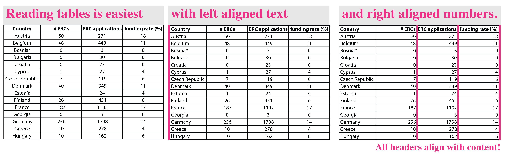

How to… Tables
The ancient gold of DataViz
Tables are one of the most successful visualizations in the history of science. They existed long before charts were invented. Friedrich Miescher reported the discovery of nucleic acids in a small table with just three rows. Janni Nusslein-Volhardt and Eric Wieschaus compiled their observations that gene expression controls embryogenesis in a table. And the seminal discovery that cells are enclosed by a lipid bilayer warranted a full-page table: Today, tables are still common in scientific papers and presentations today. I just counted around that 14 articles in a recent issue of nature had some kind of table. Simple tables are often relegated to the supplemental section. In the main section, tables come in fancier formats and disguise as heatmaps, HiC plots, or databases.

Which data warrants a table?
When a figure is done well, it provides us instant insight to the main message and visually guides us with thick lines, tall bars, patterns in a scatter plot etc to the key data. Tables on the other hand just show text and numbers in an organized form. When reading a table, we use it as text; we read from top left, to bottom right. And this is the intention of a table: it presents a complete dataset without a punchy, key message. Tables force the reader to come up with their own conclusion based on the entire data points. This means they need quite a bit of space and are more work to our audiences.
Despite its disadvantages, a table is very useful for reporting precise numbers, and for in detail comparisons. Tables are also great for presenting large datasets, in which every member of our audience is interested in a different aspect of the data. For example, each reader of the table below (ERC starting grants per country) will look for their country of interest first. If however you have a clear message, e.g., show which country gets most ERCs, use a bar chart (sort bars by size!), or when you show statistical summaries pick one of the many chart types for this purpose.
Designing a clear table
Because tables are organized text, alignment and typography are critical for their legibility, and good legibility allows faster reading.
1. Organize rows and columns
Which data is used as the key for presenting the result? This goes to the first column of every row. In our case these are the country names. All observations for this country, ERC grants, population, funding rate, get a column each.
2. Alignment is your friend
Text is best left aligned, where we start reading text. Numbers are right aligned to make comparisons by digits along a column easier. Note: each column header is aligned with its content. That means the header for a text column is left aligned, the header for a number column right aligned.

3. Font type
Choosing a legible font is always great, but really critical for numbers. To be legible, all numbers should have the same height (“new style”) and the same width (“tabular/monospace”). The width is important to compare digits within columns, the same height (so no ascenders and descenders in numbers) looks overall less cluttered.
It is not possible to make easy recommendation for a specific font since they are modified depending on the operating system and program. For example, Arial has proportional characters which would not work for numbers in a table. Microsoft Word/Mac has adapted the numbers to be tabularized, while Adobe illustrator/Mac has not.
4. Decimals
To best compare numbers in a column, they should have the same decimal points. This helps the alignment and the understanding. In general, it is always worth considering if the decimals are even important: number of grants does not warrant a decimal because it can only be a whole number. Same for humans, but humans in millions might be reasonably presented with one decimal.
5. Going the extra mile
With the above rules, you usually end up with an organized and legible table. But good news is, you can do more! Removing left and right boarders is fantastic to create extra space and use the entire width of a table cell for the content – sometimes rather important for grants!
You can do still more. The minimalist Edward Tufte even says ‘every pixel should have a meaning’. In this spirit, removing all gridlines works often just as fine. Often the well-aligned content is sufficient to guide the eye through columns and rows.
Very long tables however are hard to read without any guides. Two options exist. Either, the content may be grouped into blocks of 5 or 10 rows each. The blocks are then visually separated by white space from each other. Alternatively, the table could include a horizontal gridline every 5 or 10 rows.
6. Color
Last, and only last, think also about color (black and grey are colors too!). I personally like highlighting table headers by giving them a fill color. Usually a light grey works fine, but this very much depends on the overall presentation and the purpose. If shown on a beamer, some light greys don’t work anymore. Also think of color code (and never mix red and green). I consistently used pink, so using the same color for the header would maybe give it a coordinated look. If your fill color is dark, you have to think about white labels. And they in turn requires larger fonts to achieve equal legibility.
Glossary
Heatmap A heatmap is a matrix/table in which the cells are shaded according to a color-scale representing the an observed value. They are particularity used to represent many-to-many comparison. Heatmaps can display very large matrices in at a very small scale and allow us to rapidly compare numbers and even see coherent patterns in the data. Heatmaps may also be combined with clustering algorithms (or simple sorting by value), which facilitates seeing patterns in data. Heatmaps are not useful to get precise numbers.
Microarrays A heatmap that informs about gene expression levels across samples. Gene expression is shown as relative expression compared to a ground truth state. Up-regulation is shown in green, downregulation in red (microarrays are thus not color-blind safe).
HiC plot HiC plots show heat maps where each pixel represents counts for DNA interactions between two genomic regions. The pixel intensity indicates the number of reads (one color scale) or the divergence of reads from a control (dual color scale). The axes each show the genomic regions that are compared, usually binned to e.g. 1Mb.
Database Online formats of tables to present a large dataset.
Table-Chart hybrid A table with several observations in columns and one of the observations being presented as small chart (dotplot, boxplot, barplot) adjacent to the respective row. The chart-column usually highlights a particularly important observation.